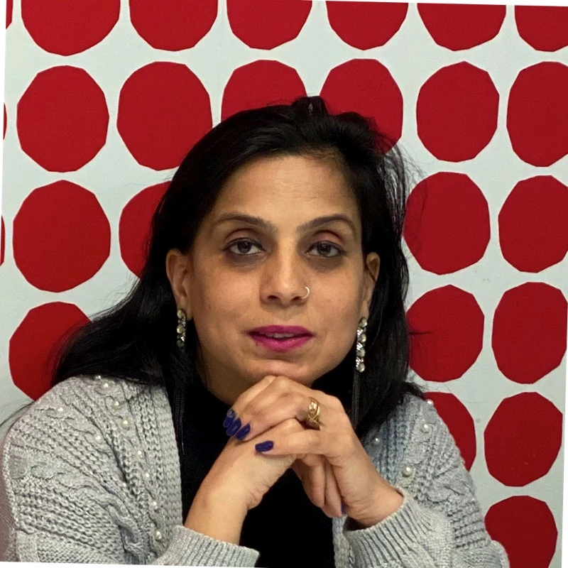

STEP 01
Begin with a conversation
Tell us who the gift is for, what you are celebrating, your timeframe, and the feeling you want it to create. A clear idea is helpful, but it is never required.
I've always had a passion for arts and crafts — it's where I feel most myself, most present, most alive. Over the years that passion turned into a habit of making things by hand for the people I love: a name spelled out in resin, a message engraved into wood, a small detail that said "I thought of you" more than anything store-bought ever could.
UNIQLIURZ started because I wanted to share that feeling with more people. Every piece we create is my way of spreading that same passion — helping you turn an idea, a name, or a memory into something someone can hold onto.

At UNIQLIURZ, the gift is only part of the experience. We keep every step clear, personal, and calm — from your first idea to the moment it is ready to give.
Our mission is to make people feel seen, celebrated, and closer to one another. Our vision is a world where everyday gifting carries more care and less guesswork.
You do not need to have everything figured out. We guide you through the whole journey.
Tell us who the gift is for, what you are celebrating, your timeframe, and the feeling you want it to create. A clear idea is helpful, but it is never required.
We help you select the product, service, or gifting route that suits your occasion — from a personal keepsake to a branded corporate collection or workshop.
Names, messages, colours, photos, logos, packaging, and finishing touches are shaped around your story. We make sure the important details are exactly right.
Before we begin creating, we confirm the final personalised details with you. This gives you confidence that your order is accurate, considered, and ready to make.
Your order is crafted with care, quality-checked, and prepared for its moment. We keep you updated so you know when your gift is on its way.
No brief too small, no idea too big — let's talk about the gift you're picturing.
Begin Your Project →